Candidate List 20260721Last night — ZTF: 2,517 passed basic cuts (75 young) · LSST: 0 passed basic cuts (0 young)Previous Day Next Day
Section 1: New Sources (age<1d) Section 2: Old (1-5d) sources observed last nightplaceholder
Section 1: New Afterglow/FBOT Cands Last Night (0)
Section 2: Older Sources Observed Last Night (13)
0. [ZTF] ZTF26abhvdrr (FBOT?) [Back to Top] [Share] [Trigger Swift] [Fritz Alert] [Fritz Source] [Lasair]RA, Dec: 306.19298, 19.98558 20h24m46.32s, 19d59m8.09sGalactic (l, b): 61.70747, -10.10382 ext(g-r) = 0.232


TESS: Sectors [ 14 41 54 55 81 82 120]
NED (10 arcsec):Found NED spec-z: z=0.16; peak abs mag = -20.18
PS1: 1 source in 3 arcsec Closest: d = 2.56 arcsec photoz=0.10+/-0.01 peak abs mag = -18.92
LegacySurvey: 0 sources in 3 arcsec

Rise Rate:
g: 0.22 mag/day
r: 0.09 mag/day
Fade Rate:
1. [ZTF] ZTF26abhxpzs (FBOT?) [Back to Top] [Share] [Trigger Swift] [Fritz Alert] [Fritz Source] [Lasair]RA, Dec: 242.28103, 0.90207 16h 9m7.45s, 0d54m7.44sGalactic (l, b): 12.5228, 35.87608 ext(g-r) = 0.134


TESS: Sectors 117
SDSS (<15 kpc):Found SDSS phot-z: z=0.13; peak abs mag = -19.51
NED (10 arcsec):Found NED spec-z: z=0.08; peak abs mag = -18.37
PS1: 0 sources in 3 arcsec
LegacySurvey: 1 sources in 3 arcsec Closest: d = 0.70 arcsec, 284.7 deg (east of north) photoz=0.1 (68% bounds 0.04, 0.16), type=DEV peak abs mag = -18.43 (68% bounds -16.6, -19.61)

Extinction-corrected gr color:
From alerts: -0.55 +/- 0.23 mag
Extinction-corrected gi color:
From alerts: -0.61 +/- 0.26 mag
Extinction-corrected ri color:
From alerts: -0.06 +/- 0.3 mag
Consistent with synchrotron, g-r>0!
Rise Rate:
g: 0.33 mag/day
r: 0.25 mag/day
Fade Rate:
2. [ZTF] ZTF26abhyids (FBOT?) [Back to Top] [Share] [Trigger Swift] [Fritz Alert] [Fritz Source] [Lasair]RA, Dec: 244.97565, 67.99556 16h19m54.16s, 67d59m44.00sGalactic (l, b): 100.6099, 38.86831 ext(g-r) = 0.035


TESS: Sectors [ 14 15 16 17 18 19 20 21 22 23 25 26 40 41 47 48 49 50
51 52 53 54 55 56 57 58 59 60 73 74 75 76 77 78 79 80
81 82 83 84 85 86 117 118 119 120 121]
PS1: 0 sources in 3 arcsec
LegacySurvey: 1 sources in 3 arcsec Closest: d = 1.35 arcsec, 292.2 deg (east of north) photoz=0.44 (68% bounds 0.12, 0.9), type=REX peak abs mag = -22.19 (68% bounds -19.08, -24.05)

Extinction-corrected gr color:
From alerts: -0.1 +/- 0.3 mag
Consistent with synchrotron, g-r>0!
Rise Rate:
g: 0.24 mag/day
r: 0.13 mag/day
Fade Rate:
3. [ZTF] ZTF26abhymqx (FBOT?) [Back to Top] [Share] [Trigger Swift] [Fritz Alert] [Fritz Source] [Lasair]RA, Dec: 245.49668, 29.44763 16h21m59.20s, 29d26m51.45sGalactic (l, b): 48.78738, 43.98696 ext(g-r) = 0.046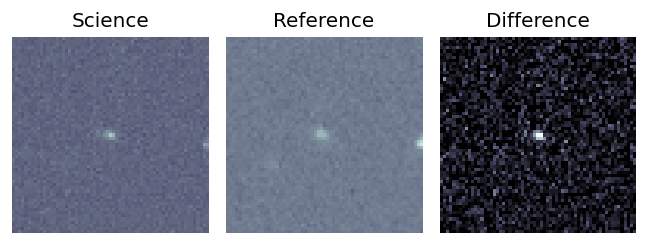
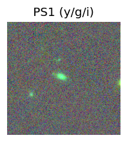
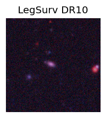
TESS: Sectors [ 24 25 51 52 78 79 117]
SDSS (<15 kpc):Found SDSS phot-z: z=0.13; peak abs mag = -19.60
PS1: 0 sources in 3 arcsec
LegacySurvey: 1 sources in 3 arcsec Closest: d = 1.71 arcsec, 70.7 deg (east of north) photoz=0.09 (68% bounds 0.08, 0.11), type=SER peak abs mag = -18.63 (68% bounds -18.17, -19.06)
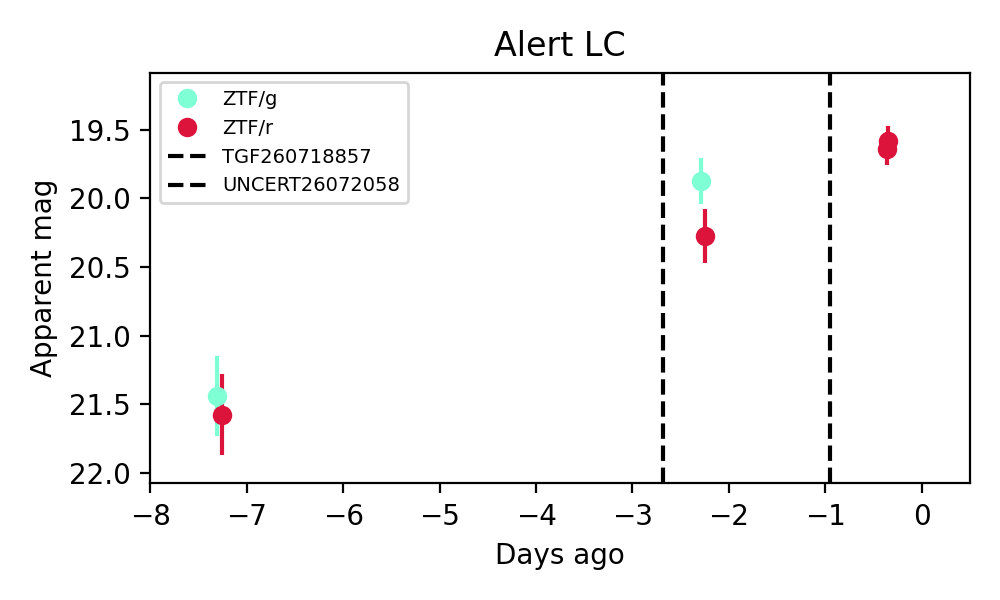
Extinction-corrected gr color:
From alerts: -0.45 +/- 0.26 mag
Rise Rate:
g: 0.31 mag/day
r: 0.29 mag/day
Fade Rate:
4. [ZTF] ZTF26abianyp (Afterglow?) [Back to Top] [Share] [Trigger Swift] [Fritz Alert] [Fritz Source] [Lasair]RA, Dec: 324.17346, 15.33062 21h36m41.63s, 15d19m50.24sGalactic (l, b): 68.89745, -26.49325 ext(g-r) = 0.13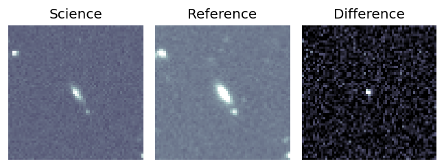
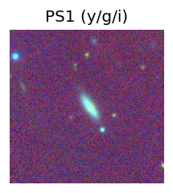
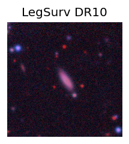
TESS: Sectors [55 82]
SDSS (<15 kpc):Found SDSS phot-z: z=0.11; peak abs mag = -19.06
PS1: 0 sources in 3 arcsec
LegacySurvey: 1 sources in 3 arcsec Closest: d = 0.91 arcsec, 231.2 deg (east of north) photoz=0.1 (68% bounds 0.08, 0.13), type=EXP peak abs mag = -18.61 (68% bounds -17.96, -19.07)
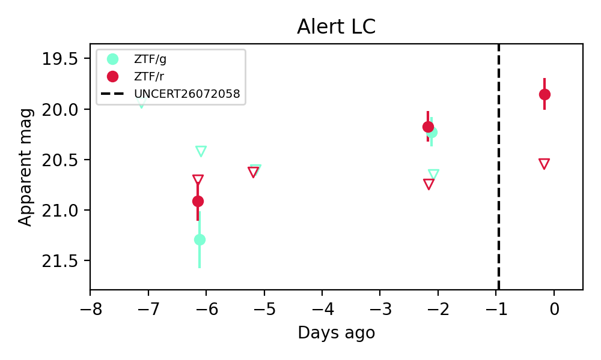
Extinction-corrected gr color:
From alerts: -0.08 +/- 0.21 mag
Consistent with synchrotron, g-r>0!
Rise Rate:
g: 0.27 mag/day
r: 0.45 mag/day
Fade Rate:
g: 12.95 mag/day
r: 0.18 mag/day
5. [ZTF] ZTF26abioqci (Afterglow?) [Back to Top] [Share] [Trigger Swift] [Fritz Alert] [Fritz Source] [Lasair]RA, Dec: 238.69343, 19.16844 15h54m46.42s, 19d10m6.39sGalactic (l, b): 32.26699, 47.3437 ext(g-r) = 0.04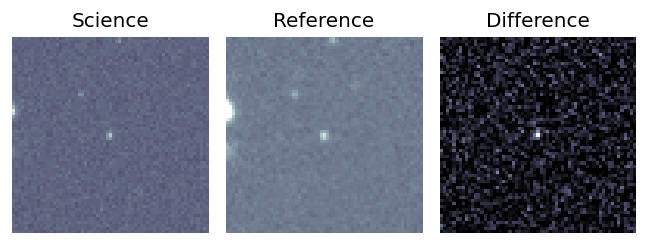
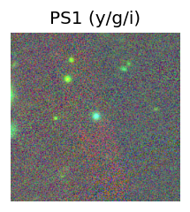
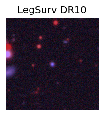
Milliquas v6 (2 arcsec):Found None (description), name = None, QSO probability: None %
TESS: Sectors [ 24 25 51 78 117]
NED (10 arcsec):Found NED spec-z: z=0.71; peak abs mag = -22.90
PS1: 0 sources in 3 arcsec
LegacySurvey: 1 sources in 3 arcsec Closest: d = 0.33 arcsec, 194.4 deg (east of north) photoz=0.71 (68% bounds 0.5, 0.88), type=PSF peak abs mag = -22.8 (68% bounds -21.87, -23.39)
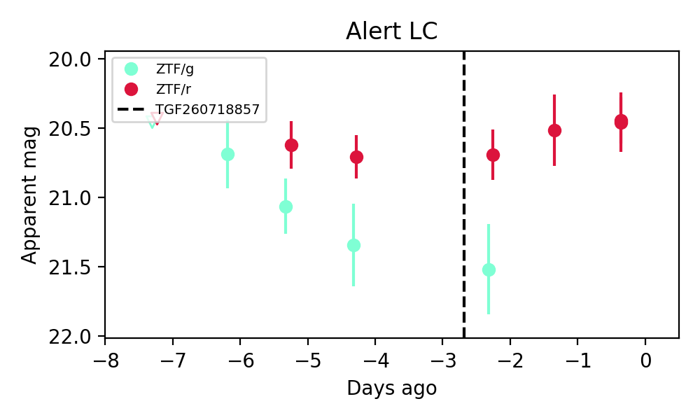
Extinction-corrected gr color:
From alerts: 0.79 +/- 0.37 mag
Consistent with synchrotron, g-r>0!
Rise Rate:
Fade Rate:
g: 0.21 mag/day
6. [ZTF] ZTF26abipikr (FBOT?) [Back to Top] [Share] [Trigger Swift] [Fritz Alert] [Fritz Source] [Lasair]RA, Dec: 258.49731, 8.19926 17h13m59.36s, 8d11m57.34sGalactic (l, b): 29.17254, 25.36611 ext(g-r) = 0.137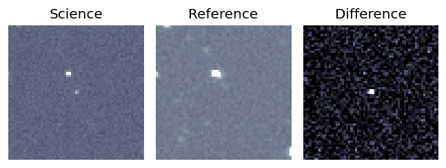
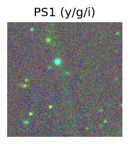
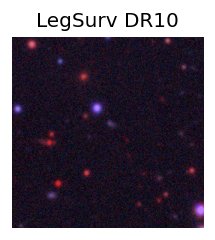
TESS: Sectors [117 118]
PS1: 0 sources in 3 arcsec
LegacySurvey: 1 sources in 3 arcsec Closest: d = 3.12 arcsec, 342.2 deg (east of north) photoz=0.26 (68% bounds 0.2, 0.35), type=EXP peak abs mag = -20.89 (68% bounds -20.21, -21.62)
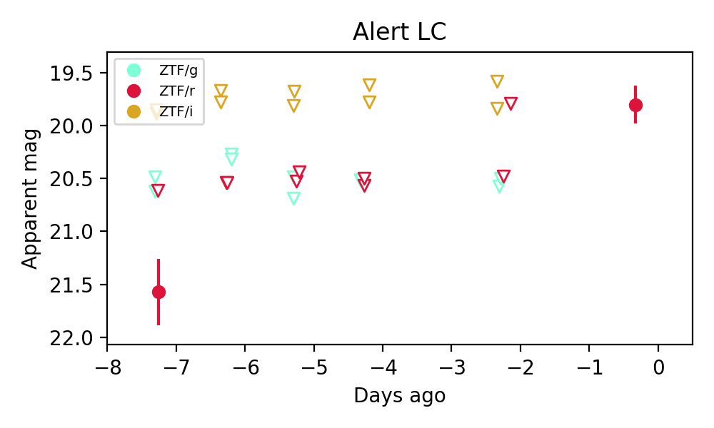
Extinction-corrected gr color:
From alerts: -1.09 +/- 99 mag
Extinction-corrected ri color:
From alerts: 1.61 +/- 99 mag
Rise Rate:
r: 0.35 mag/day
Fade Rate:
7. [ZTF] ZTF26abipper (FBOT?) [Back to Top] [Share] [Trigger Swift] [Fritz Alert] [Fritz Source] [Lasair]RA, Dec: 262.56589, 32.54029 17h30m15.81s, 32d32m25.04sGalactic (l, b): 56.52912, 30.36373 ext(g-r) = 0.032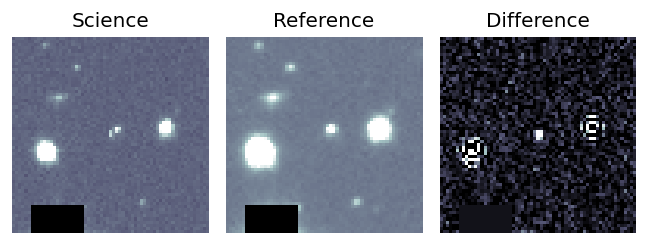
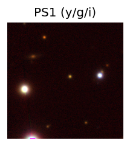
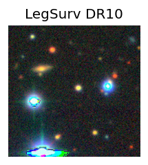
TESS: Sectors [ 25 26 52 53 79 80 117 118]
PS1: 0 sources in 3 arcsec
LegacySurvey: 1 sources in 3 arcsec Closest: d = 2.60 arcsec, 306.0 deg (east of north) photoz=0.21 (68% bounds 0.19, 0.27), type=PSF peak abs mag = -20.66 (68% bounds -20.36, -21.26)
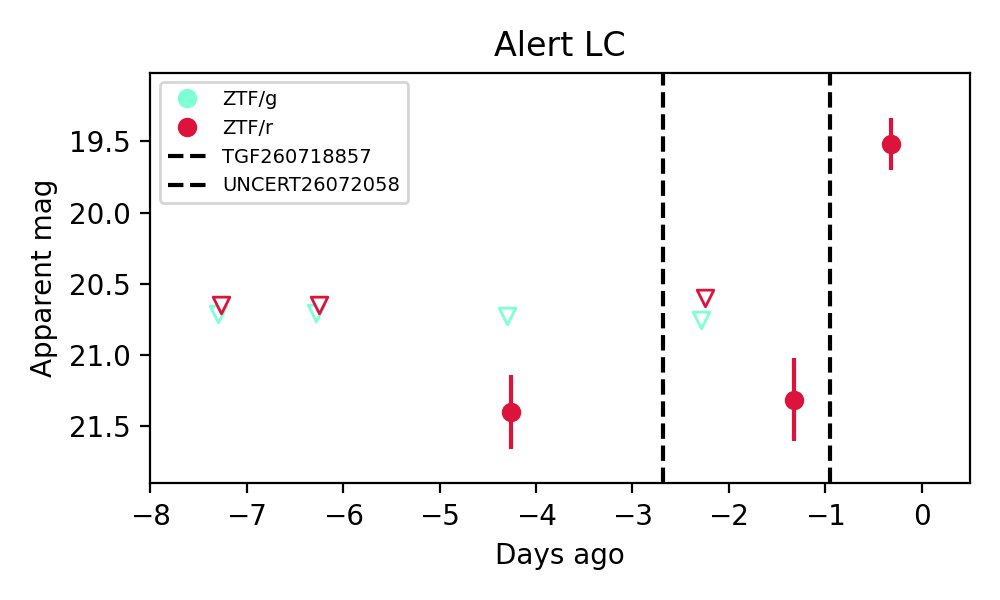
Extinction-corrected gr color:
From alerts: -0.71 +/- 99 mag
Rise Rate:
r: 0.56 mag/day
Fade Rate:
8. [ZTF] ZTF26abiqgse (Afterglow?) [Back to Top] [Share] [Trigger Swift] [Fritz Alert] [Fritz Source] [Lasair]RA, Dec: 319.45892, -18.12952 21h17m50.14s, -18d-7m-46.26sGalactic (l, b): 31.53802, -40.25347 WARNING: -2.28 deg from ecliptic plane ext(g-r) = 0.052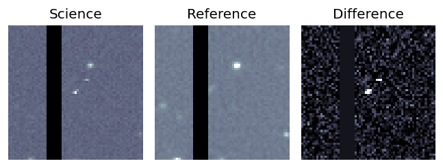
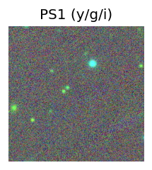
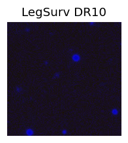
TESS: Sectors [ 92 116]
PS1: 0 sources in 3 arcsec
LegacySurvey: 0 sources in 3 arcsec
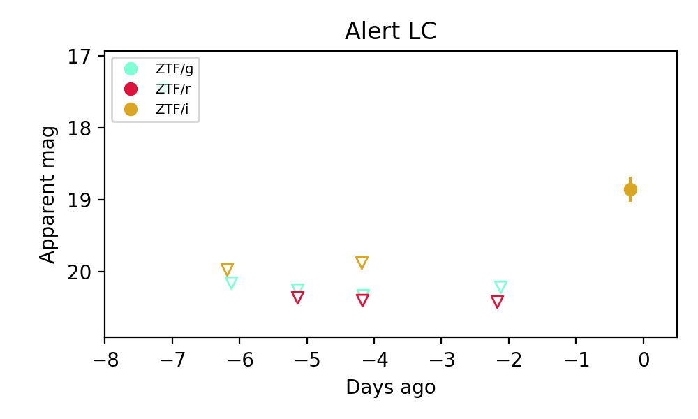
Rise Rate:
g: 0.7 mag/day
i: 0.25 mag/day
Fade Rate:
g: 2.7 mag/day
9. [ZTF] ZTF26abismyx (FBOT?) [Back to Top] [Share] [Trigger Swift] [Fritz Alert] [Fritz Source] [Lasair]RA, Dec: 4.40538, 14.05715 0h17m37.29s, 14d 3m25.76sGalactic (l, b): 110.62467, -48.00486 ext(g-r) = 0.058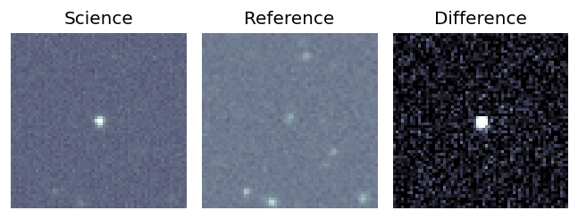
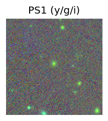
TESS: Sectors [42 43 57 70 84]
SDSS (<15 kpc):Found SDSS phot-z: z=0.45; peak abs mag = -24.12
PS1: 0 sources in 3 arcsec
LegacySurvey: 1 sources in 3 arcsec Closest: d = 1.37 arcsec, 13.5 deg (east of north) photoz=0.5 (68% bounds 0.46, 0.52), type=EXP peak abs mag = -24.24 (68% bounds -24.05, -24.36)
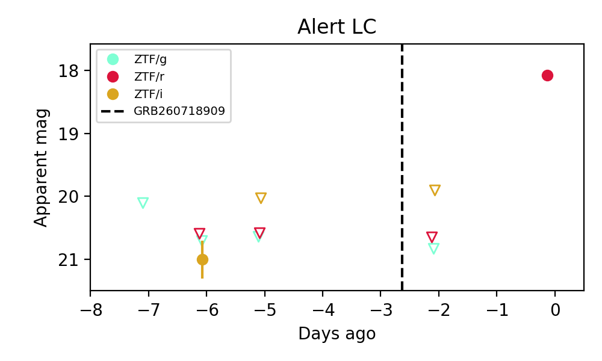
Extinction-corrected gi color:
From alerts: -0.39 +/- 99 mag
Extinction-corrected ri color:
From alerts: -0.45 +/- 99 mag
Rise Rate:
r: 1.29 mag/day
Fade Rate:
10. [ZTF] ZTF26abisqla (FBOT?) [Back to Top] [Share] [Trigger Swift] [Fritz Alert] [Fritz Source] [Lasair]RA, Dec: 332.6701, -12.13929 22h10m40.82s, -12d-8m-21.45sGalactic (l, b): 46.59728, -49.51374 WARNING: -0.82 deg from ecliptic plane ext(g-r) = 0.056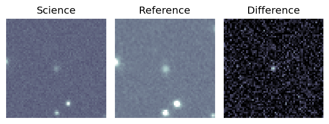
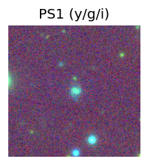
TESS: Sectors [42 92]
PS1: 0 sources in 3 arcsec
LegacySurvey: 1 sources in 3 arcsec Closest: d = 0.61 arcsec, 226.4 deg (east of north) photoz=0.2 (68% bounds 0.16, 0.23), type=REX peak abs mag = -19.74 (68% bounds -19.2, -20.18)
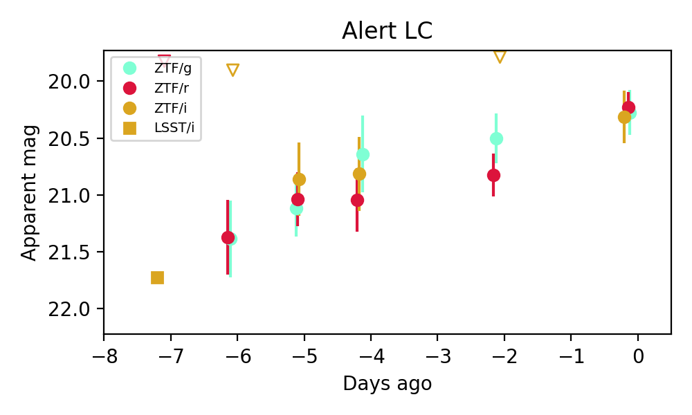
Extinction-corrected gr color:
From alerts: -0.01 +/- 0.24 mag
Extinction-corrected gi color:
From alerts: -0.13 +/- 0.3 mag
Extinction-corrected ri color:
From alerts: -0.12 +/- 0.27 mag
Consistent with synchrotron, g-r>0!
Rise Rate:
g: 0.17 mag/day
r: 0.25 mag/day
i: 0.23 mag/day
Fade Rate:
11. [ZTF] ZTF26abistnu (FBOT?) [Back to Top] [Share] [Trigger Swift] [Fritz Alert] [Fritz Source] [Lasair]RA, Dec: 320.52036, 9.40803 21h22m4.89s, 9d24m28.92sGalactic (l, b): 61.22127, -27.51105 ext(g-r) = 0.047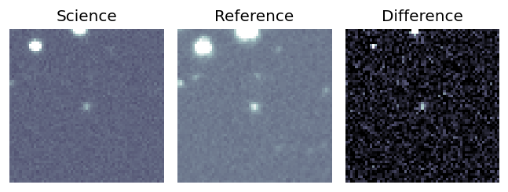
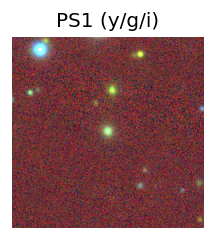
TESS: Sectors 82
SDSS (<15 kpc):Found SDSS phot-z: z=0.18; peak abs mag = -19.60
PS1: 0 sources in 3 arcsec
LegacySurvey: 1 sources in 3 arcsec Closest: d = 0.29 arcsec, 140.7 deg (east of north) photoz=0.13 (68% bounds 0.12, 0.14), type=SER peak abs mag = -18.72 (68% bounds -18.58, -18.82)
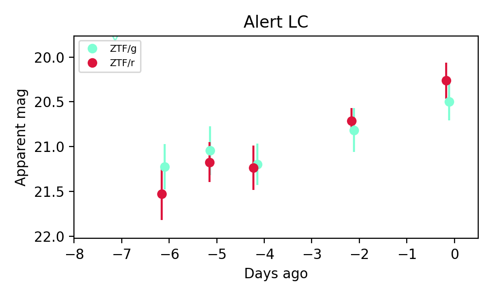
Extinction-corrected gr color:
From alerts: 0.19 +/- 0.29 mag
Consistent with synchrotron, g-r>0!
Rise Rate:
g: 0.12 mag/day
r: 0.2 mag/day
Fade Rate:
12. [ZTF] ZTF26abisvly (FBOT?) [Back to Top] [Share] [Trigger Swift] [Fritz Alert] [Fritz Source] [Lasair]RA, Dec: 47.29487, 37.37513 3h 9m10.77s, 37d22m30.45sGalactic (l, b): 151.10243, -17.84974 ext(g-r) = 0.179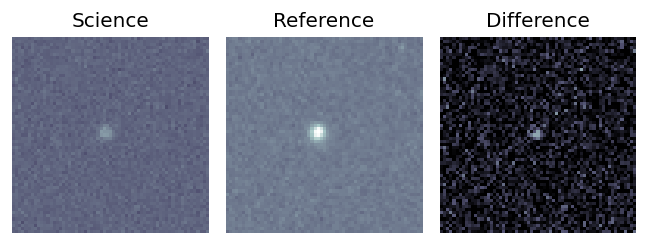
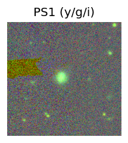
TESS: Sectors [18 58 85]
SDSS (<15 kpc):Found SDSS phot-z: z=0.13; peak abs mag = -19.25
PS1: 1 source in 3 arcsec Closest: d = 1.82 arcsec photoz=0.16+/-0.03 peak abs mag = -19.79
LegacySurvey: 0 sources in 3 arcsec
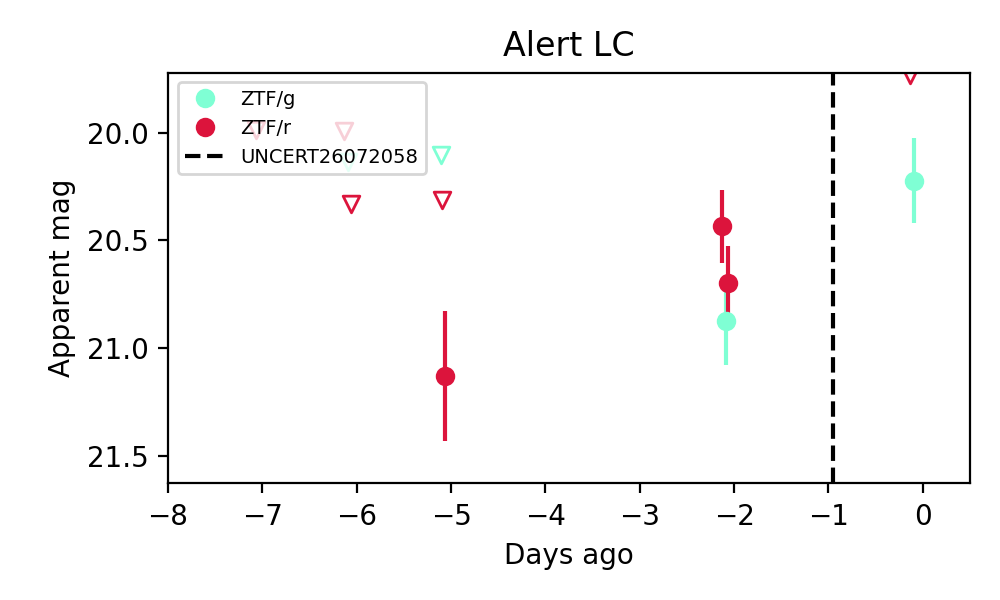
Extinction-corrected gr color:
From alerts: 0.31 +/- 99 mag
Rise Rate:
g: 0.33 mag/day
Fade Rate: